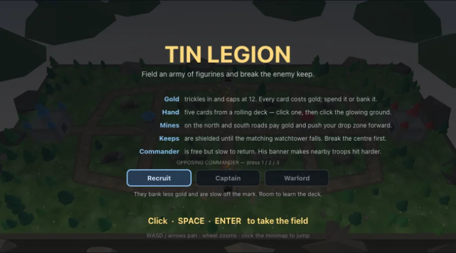

Jouer →Jeu completTin Legion
Un jeu de siège en trois routes sur un grand champ de bataille : l'or tombe goutte à goutte, cinq cartes de troupe attendent en bas, et chacune que tu joues pose une escouade de figurines d'étain qui part toute seule. Tu ne diriges jamais un soldat : tu choisis quoi aligner, où le poser et quand ; une carte en main, la route de cette escouade est tracée au sol, et le côté de ta porte choisit sa voie. Trois routes relient les deux donjons, une tour de guet garde chaque route centrale, et sur les ailes deux mines d'or attendent derrière des camps neutres. Une mine capturée rapporte de l'or et avance ta zone de déploiement ; un donjon reste protégé tant que sa propre tour de guet tient. Dix cartes, un commandant gratuit et trois niveaux de difficulté pour l'adverse. Physique : chaque figurine est un cercle dynamique dans un Space sans gravité, si bien que la foule se bouscule d'elle-même ; les tirs sont des corps capteurs dont les impacts arrivent par InteractionListener, le tir ami étant écarté par les groupes et masques de capteur plutôt que par un if ; les barils détonnent avec une vraie impulsion radiale et les volants ont leur propre groupe de collision. En 3D, un plateau d'herbe flottant dans la brume, avec un rig low-poly articulé par type de troupe.